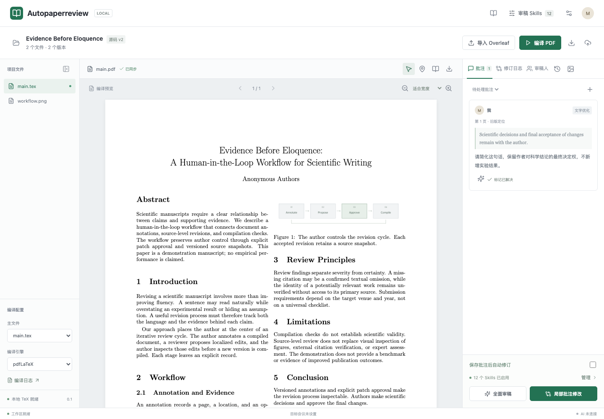
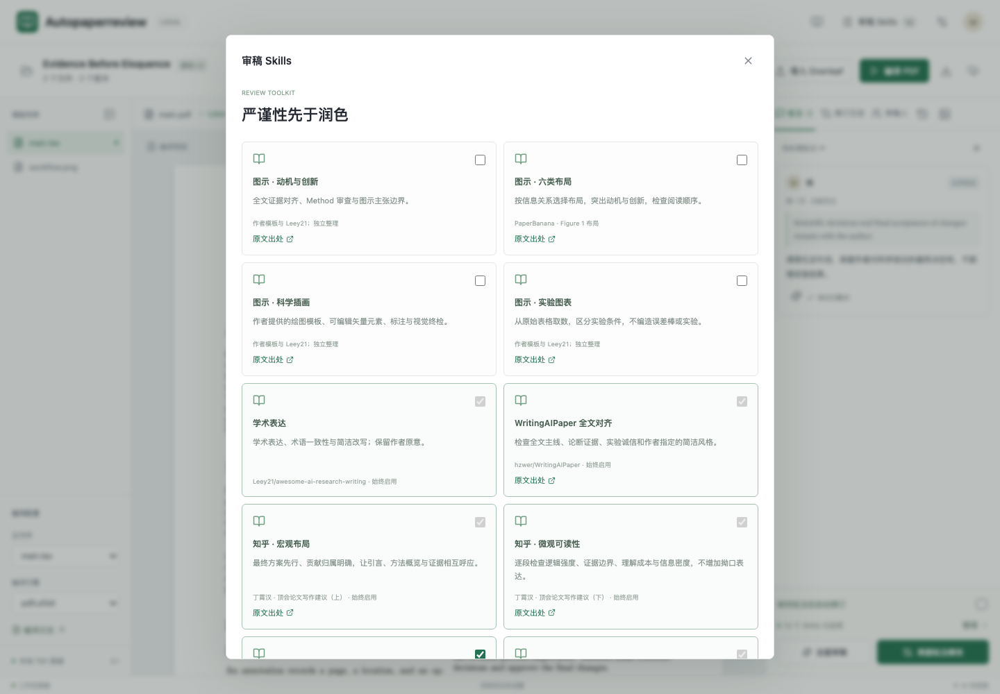
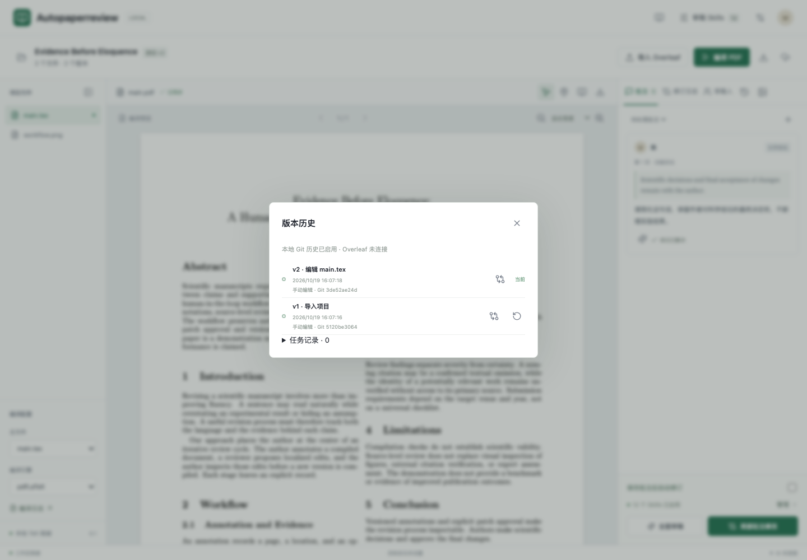
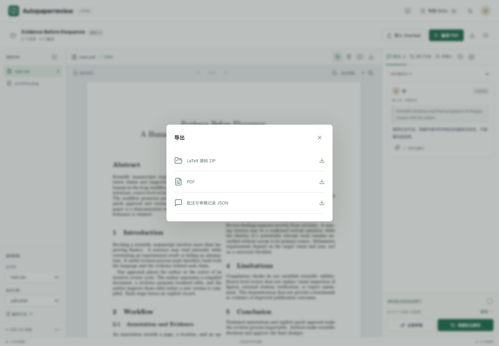
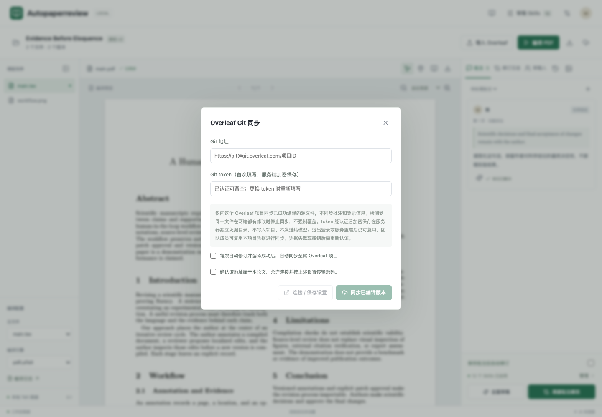
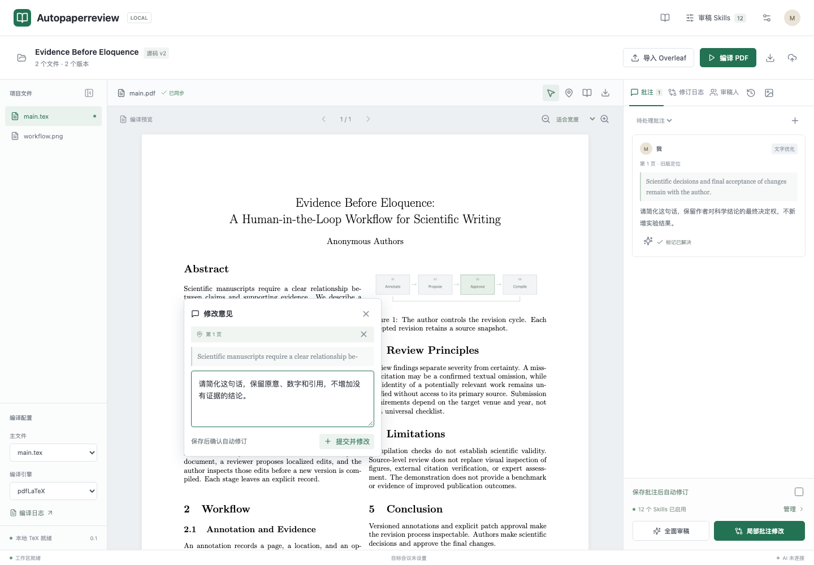

01 · 从源码到可修改的论文
导入源码 → 编译 PDF → 留批注 → 修订与编译 → 对照检查 → 导出或同步

第一次打开
- 向管理员索取当前公网链接和团队登录信息。伙伴不需要安装 ZeroTier。
- 在 Overleaf 下载 Source ZIP。只上传 PDF 不能修改 TeX 正文。
- 点击右上角「导入 Overleaf」，上传可信 ZIP。
生成阅读稿
- 在左下角核对主文件，例如
main.tex，以及编译引擎。 - 点击「编译 PDF」，成功后用鼠标滚动翻页。
- 编译失败先看左下角「编译日志」，不要把旧 PDF 当成新稿。
03 · 用 Skills 约束写作，而不是代替证据
点击页眉「审稿 Skills」查看本轮规则及出处。系统要求始终启用或被其他规则依赖的条目不能随意取消；可用条目以当前页面为准。

04 · 核对修改，并能回到旧版本
AI 修改的是 .tex 源码，PDF 来自重新编译。查看右侧「修订日志」核对原文、改后、原因与模型；点击旁边的历史图标查看版本。

什么才算完成
- 「已修改」：源码确实改变，且编译、保存成功，仍需作者复核。
- 「待确认」：建议尚未应用；「未修改」或「失败」不能当成完成。
- 已处理意见可移入修订日志；仍不满意时恢复到批注，继续修改。
安全恢复
- 先核对版本时间和 Git 差异，必要时导出当前稿。
- 恢复旧版会创建一个新版本，保留之前的历史，并恢复相应源码与 PDF。
- 恢复影响整个共享项目，不只是你的浏览器；先与伙伴确认。不会自动发布到 Overleaf。
05 · 导出可交付文件
点击顶部下载图标打开「导出项目」。交稿前先核对 PDF 是否与当前源码同步，再检查版式、图表、引用和页数。

给作者或合作伙伴
- 源码 ZIP：保留 TeX、Bib、图片和模板，用于后续编辑或上传 Overleaf。
- PDF：用于阅读和投稿前版式检查，需确认是当前编译版本。
- 审稿记录 JSON：用于保存批注、修订及可用的追溯信息。
给管理员
源码 ZIP 不等于完整系统备份。应另行备份项目数据目录、版本记录和 Git 仓库。
登录配置、模型密钥与 Overleaf 凭据是敏感数据，必须独立保护，不能加入可分享的论文包或本指南。
06 · Overleaf Git 是可选同步，不是导入的前提
不连接 Overleaf 也能批注、修改与导出。需要同步时点击顶部「Overleaf 同步」图标，并由项目负责人完成认证。

连接与推送
- 从自己的 Overleaf 项目取得 Git 地址，核对项目归属。
- 仅在密码框填写 Git token，不发到聊天或截图中。
- 首次建议关闭自动同步，连接成功后点击「同步已编译版本」，再到 Overleaf 核对结果。
避免冲突
- 保存凭据后通常无需每次登录重填；撤销、过期或丢失私有凭据目录后需要重新认证。
- 同步方向是本系统源码到 Overleaf，不是实时双向编辑。
- 两端有冲突时先备份并人工合并，不强制覆盖。系统 Git 历史与 Overleaf 提交是两套记录。
07 · 多人协作与常见问题
这是可信团队共享工作区，不是逐用户隔离的个人空间。成员共用论文和模型额度；不能用共享登录记录精确证明每次操作属于哪位成员。
十个人协作时怎么用
- 每个人保存自己的明确批注；系统会刷新其他人的变化。
- 同一篇文章只执行一个 AI 修订任务。不要十个人反复点击启动；开启自动修订时，新批注按轮次合并处理。
- 直接改源码遇到版本冲突，先重新读取当前文件，再合并自己的修改。被拒绝的冲突请求没有覆盖他人的版本。
- 网络超时先看任务和版本记录，不能把“没收到回复”当成“没执行”。不要因重试而重复消耗模型额度。
| 现象 | 你应该做什么 |
|---|---|
| 网页打开，但论文一直加载 | 顶部查看执行端状态；管理员检查本机主动连接公网队列的服务。本机需开机联网，访问者不需要安装模型客户端。 |
| 提交后显示排队 | 请求保存在远端，恢复连接后由本机领取。展开顶部执行队列查看状态或取消尚未领取的请求；不要重复提交。交付结束不等于论文修改完成，仍需核对修订日志。 |
| PDF 提示 503 或加载失败 | 使用「重新加载 PDF」，不要重新提交修订。当前主动领取模式中，论文和 PDF 仍由本机工作区提供。 |
| 已有后台任务 / 409 | 先保存批注，等本轮结束。源码冲突则重新打开文件后合并，不能直接覆盖。 |
| 模型 400、402、拒绝或超时 | 保留时间、模型名、请求编号和错误文字，交管理员核查；不代表源码已修改。 |
| 修改位置失效、找不到原句 | 基于当前 PDF 重新选文，核对当前 TeX，不使用模糊替换掩盖冲突。 |
| 缺少 .sty、字体、图片 | 提供编译日志中的首个实质错误和编译引擎，不要只截最后一行失败信息。 |
| 修改后内容不满意 | 先看修订差异，恢复相关批注；需要整稿回退时使用版本历史，并通知其他成员。 |
分享边界
本指南可分享给获准使用的伙伴，但登录密码请由管理员单独发送。不要公开未发表论文、token、API Key 或内部项目截图。AI 建议必须由作者核实，尤其是数据、实验、创新性和投稿要求。
02 · 选中文本，写清楚要改什么
划选正文显示翻译浮窗；对选文右键打开批注框。需要修改具体句子时，优先保留选文定位，而不是只写全文意见。

建议这样写
“请简化这句话，保留原意、72.5% 和原引用，不新增实验结论。”
“请让这段回应 Introduction 的第二项贡献，只改过渡和措辞。”
提交前确认